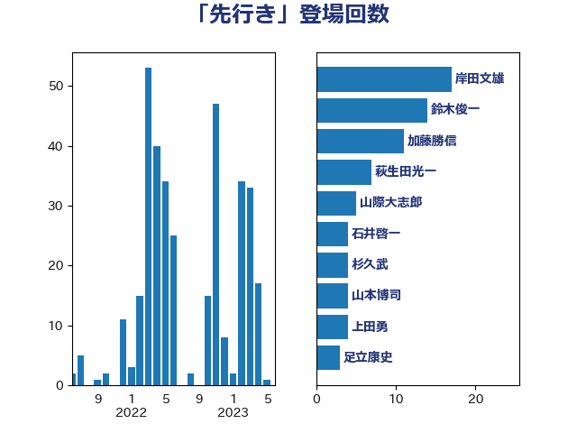

単語「先行き」

| 岸田文雄 | 自由民主党 | 14 回 |
| 麻生太郎 | 自由民主党 | 12 回 |
| 鈴木俊一 | 自由民主党 | 11 回 |
| 萩生田光一 | 自由民主党 | 7 回 |
| 山際大志郎 | 自由民主党 | 6 回 |
| 梶山弘志 | 自由民主党 | 5 回 |
| 森本真治 | 立憲民主党 | 5 回 |
| 石井啓一 | 公明党 | 5 回 |
| 杉久武 | 公明党 | 4 回 |
| 秋野公造 | 公明党 | 4 回 |
| 西村康稔 | 自由民主党 | 4 回 |
| 坂本哲志 | 自由民主党 | 3 回 |
| 石井章 | 日本維新の会 | 3 回 |
| 神田潤一 | 自由民主党 | 3 回 |
| 藤井比早之 | 自由民主党 | 3 回 |
| 赤羽一嘉 | 公明党 | 3 回 |
| 上田清司 | 国民民主党 | 2 回 |
| 中西祐介 | 自由民主党 | 2 回 |
| 丹羽秀樹 | 自由民主党 | 2 回 |
| 勝部賢志 | 立憲民主党 | 2 回 |
| 吉田統彦 | 立憲民主党 | 2 回 |
| 太田房江 | 自由民主党 | 2 回 |
| 小熊慎司 | 立憲民主党 | 2 回 |
| 山岡達丸 | 立憲民主党 | 2 回 |
| 山本剛正 | 日本維新の会 | 2 回 |
| 山本博司 | 公明党 | 2 回 |
| 山添拓 | 日本共産党 | 2 回 |
| 徳永久志 | 立憲民主党 | 2 回 |
| 杉尾秀哉 | 立憲民主党 | 2 回 |
| 枝野幸男 | 立憲民主党 | 2 回 |
| 武村展英 | 自由民主党 | 2 回 |
| 浅野哲 | 国民民主党 | 2 回 |
| 牧山ひろえ | 立憲民主党 | 2 回 |
| 田村まみ | 国民民主党 | 2 回 |
| 福田達夫 | 自由民主党 | 2 回 |
| 竹内真二 | 公明党 | 2 回 |
| 竹内譲 | 公明党 | 2 回 |
| 美延映夫 | 日本維新の会 | 2 回 |
| 菅義偉 | 自由民主党 | 2 回 |
| 足立康史 | 日本維新の会 | 2 回 |
| 下村博文 | 自由民主党 | 1 回 |
| 下条みつ | 立憲民主党 | 1 回 |
| 世耕弘成 | 自由民主党 | 1 回 |
| 中島克仁 | 立憲民主党 | 1 回 |
| 中西健治 | 自由民主党 | 1 回 |
| 中野英幸 | 自由民主党 | 1 回 |
| 伊藤渉 | 公明党 | 1 回 |
| 佐々木さやか | 公明党 | 1 回 |
| 佐藤茂樹 | 公明党 | 1 回 |
| 加藤勝信 | 自由民主党 | 1 回 |
| 古屋範子 | 公明党 | 1 回 |
| 古川禎久 | 自由民主党 | 1 回 |
| 古賀之士 | 立憲民主党 | 1 回 |
| 古賀友一郎 | 自由民主党 | 1 回 |
| 吉川元 | 立憲民主党 | 1 回 |
| 吉田久美子 | 公明党 | 1 回 |
| 國場幸之助 | 自由民主党 | 1 回 |
| 大塚耕平 | 国民民主党 | 1 回 |
| 大家敏志 | 自由民主党 | 1 回 |
| 安江伸夫 | 公明党 | 1 回 |
| 宮本徹 | 日本共産党 | 1 回 |
| 小野田紀美 | 自由民主党 | 1 回 |
| 岩田和親 | 自由民主党 | 1 回 |
| 川崎ひでと | 自由民主党 | 1 回 |
| 平山佐知子 | 無所属 | 1 回 |
| 斉藤鉄夫 | 公明党 | 1 回 |
| 松野博一 | 自由民主党 | 1 回 |
| 林芳正 | 自由民主党 | 1 回 |
| 梅谷守 | 立憲民主党 | 1 回 |
| 橋本聖子 | 無所属 | 1 回 |
| 水岡俊一 | 立憲民主党 | 1 回 |
| 沢田良 | 日本維新の会 | 1 回 |
| 泉健太 | 立憲民主党 | 1 回 |
| 浜野喜史 | 国民民主党 | 1 回 |
| 片山さつき | 自由民主党 | 1 回 |
| 田中健 | 国民民主党 | 1 回 |
| 田村憲久 | 自由民主党 | 1 回 |
| 田村貴昭 | 日本共産党 | 1 回 |
| 田野瀬太道 | 無所属 | 1 回 |
| 石川博崇 | 公明党 | 1 回 |
| 礒崎哲史 | 国民民主党 | 1 回 |
| 福山哲郎 | 立憲民主党 | 1 回 |
| 福岡資麿 | 自由民主党 | 1 回 |
| 笠井亮 | 日本共産党 | 1 回 |
| 緑川貴士 | 立憲民主党 | 1 回 |
| 羽田次郎 | 立憲民主党 | 1 回 |
| 藤木眞也 | 自由民主党 | 1 回 |
| 西岡秀子 | 国民民主党 | 1 回 |
| 西村智奈美 | 立憲民主党 | 1 回 |
| 西田昌司 | 自由民主党 | 1 回 |
| 角田秀穂 | 公明党 | 1 回 |
| 赤澤亮正 | 自由民主党 | 1 回 |
| 足立敏之 | 自由民主党 | 1 回 |
| 重徳和彦 | 立憲民主党 | 1 回 |
| 野田佳彦 | 立憲民主党 | 1 回 |
| 野田国義 | 立憲民主党 | 1 回 |
| 金子恵美 | 立憲民主党 | 1 回 |
| 長坂康正 | 自由民主党 | 1 回 |
| 音喜多駿 | 日本維新の会 | 1 回 |
| 高村正大 | 自由民主党 | 1 回 |
| 高橋光男 | 公明党 | 1 回 |